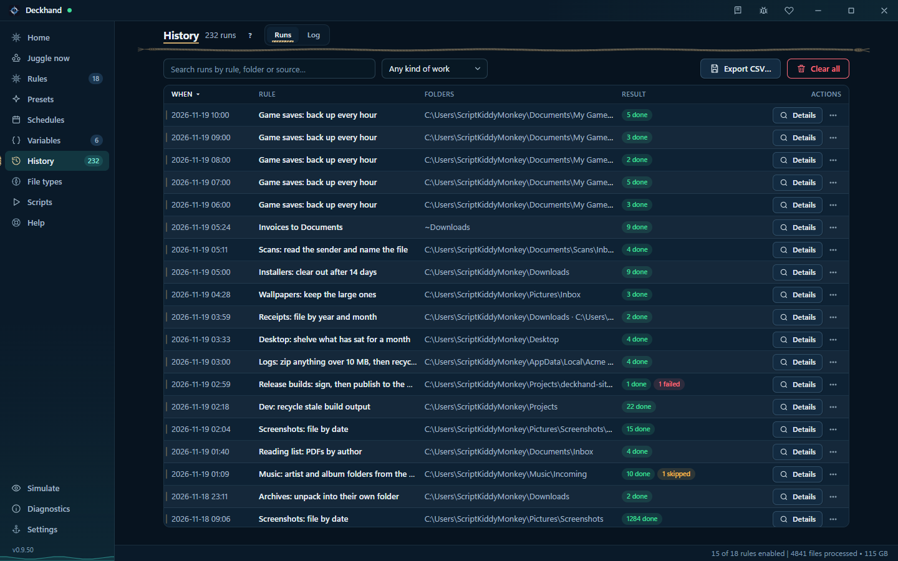

History and the Log
Review what each run did, undo it, and search every action on every file.
History has two views of the same activity: Runs and the Log.
Runs
Every run is listed with its result. The screenshot shows the Runs tab with a search box and filters on top, then one row per run: when it started, the rule, its folders and the result, with Details and a ... menu on each row.


- Open a run to see Details: every file and step. You can undo one file from here. The screenshot is the details of the big run of Screenshots: file by date on 18 November: 1284 files done, each with its action (Move), the result and where it Becomes. The undo icon at the end of a row undoes that one file.

- The ... menu on a run has Undo this run and Remove.
- The Problems tab shows failed and left-alone files with the reason, and can export them to CSV.
Runs from rules and presets, and runs started from the command line, appear here. The command line shows as the source cli.
Log
The Log lists every action on every file. Search it, and filter by result, rule, date and kind of work (moves, copies, renames, deletes, commands and so on). Large runs are searched by the backend, so the filter covers all files, not only those on screen.
In the screenshot the Log tab lists the latest actions, one line per file: when, the result, the rule, the file, the action, the result details and where the file becomes. Lines of the rule Scans carry an OCR mark, because their text was read with OCR. The filters above the list narrow it by result, rule, kind of work and dates.

Home counters
The Home page counts files processed and data handled. Only files an action really changed count: files that were already fine, skipped, excluded, failed or undone do not. The counters come from your History. The menu on the counters resets or restores them. Your files, History and Undo are not touched.
History size
Settings controls how much history and log Deckhand keeps. History and logs can contain file names, paths, destinations and error messages. See the privacy policy.